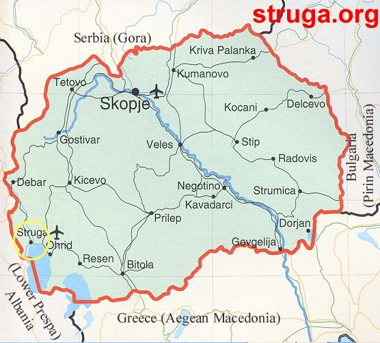
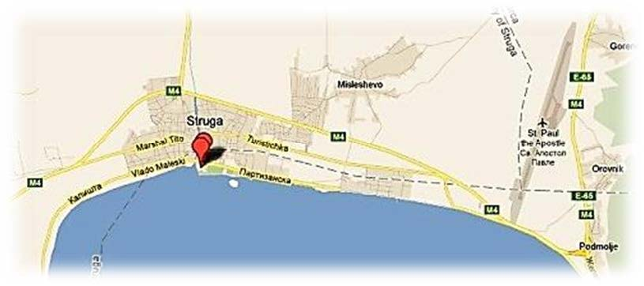

HOW TO REACH YOUR DESTINATION
Struga, R. of MACEDONIA

The road communication makes the main transport network. The main international highway the E-75 crosses the country. Network of well maintained roads links its towns and its popular tourist areas.
The Republic of Macedonia is linked with neighboring and some West European countries by both regular and seasonal bus routes. Direct bus services with: Ljubljana, Sofia, Munich, Bonn, Dusseldorf, Stuttgart, Dortmund, Frankfurt, Vienna, Malme, Gothenburg.
Taxis are avilable everywhere at reasonable fares.
You can rent a vehicle (with or without a driver)
For vehicles: the car license, the green of blue insurance card and the power of attorney if another person drives the car.
 View Drim Hotel in a larger map